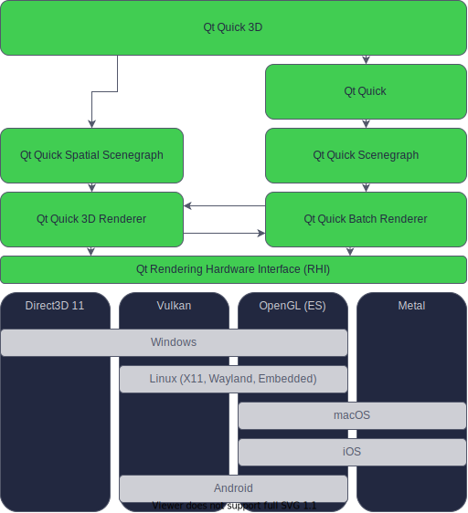
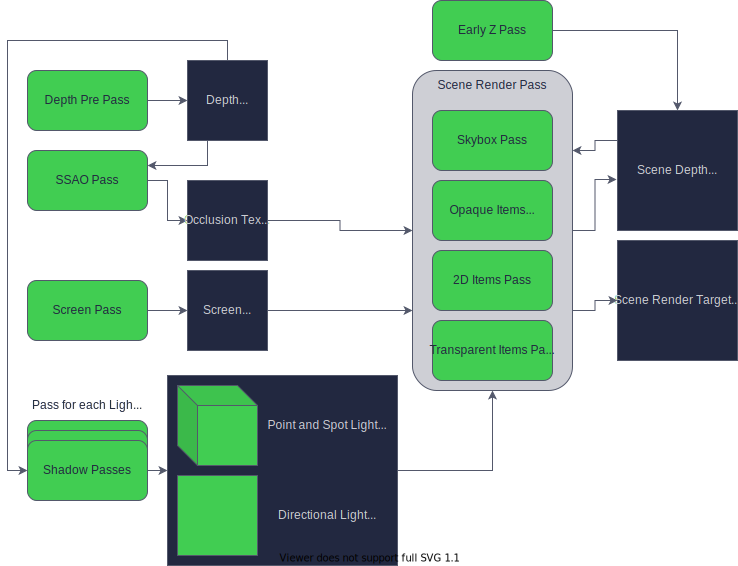
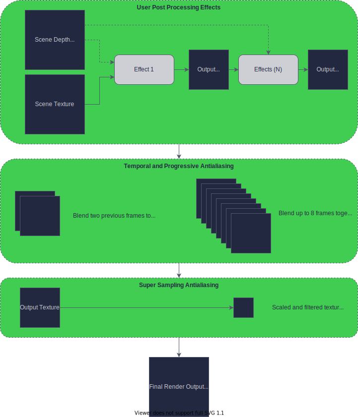

Qt Quick 3D Architecture
Qt Quick 3D extends Qt Quick to support the rendering of 3D content. It adds extensive functionality, including several new public QML imports, as well as a new internal scene graph and renderer. This document describes the architecture of Qt Quick 3D from the public API to the details of how the rendering pipeline works.
Module Overview
Qt Quick 3D consists of several modules and plugins that expose the additional 3D APIs as well as utilities for conditioning and importing existing 3D assets.
QML Imports
- QtQuick3D - The main import which contains all the core components of Qt Quick 3D
- QtQuick3D.AssetUtils - A library for importing 3D assets at runtime
- QtQuick3D.Helpers - A library of additional components which can be used to help design 3D and debug 3D scenes.
C++ Libraries
- QtQuick3D - The only public C++ module. Contains the definitions of all types exposed to the QtQuick3D QML import as well as a few C++ APIs
- QQuick3DGeometry - Subclass to create procedural mesh data
- QQuick3DTextureData - Subclass to create procedural texture data
- QQuick3D::idealSurfaceFormat - used to get the ideal surface format
QtQuick3DAssetImport- An internal and private library to aid in importing assets and convert assets to QML.QtQuick3DRuntimeRender- An internal and private library that contains the spatial scene graph nodes and renderer.QtQuick3DUtils- An internal and private library used as a common utility library by all of the other C++ modules.
AssetImporters Plugins
The asset import tooling is implemented using a plugin based architecture. The plugins shipped with Qt Quick 3D extend the functionality of the asset importer library and tool, Balsam.
- Assimp - This plugin uses the 3rd party library libAssimp to convert 3D assets in 3D interchange formats to Qt Quick 3D QML components.
How does Qt Quick 3D fit into the Qt Graphics Stack

The above diagram illustrates how Qt Quick 3D fits into the larger Qt graphics stack. Qt Quick 3D works as an extension to the 2D Qt Quick API, and when using 3D scene items in conjunction with View3D the scene will be rendered via the Qt Rendering Hardware Interface (RHI). The RHI will translate API calls into the correct native rendering hardware API calls for a given platform. The diagram above shows the options available for each platform. If no native backend is explicitly defined, then Qt Quick will default to a sensible native backend for rendering for each platform.
The integration between the Qt Quick 3D components of the stack and the Qt Quick stack are described below in the next sections.
3D in 2D Integration
Displaying 3D content in 2D is the primary purpose of the Qt Quick 3D API. The primary interface for integrating 3D content into 2D is the View3D component.
The View3D component works like any other QQuickItem derived class with content and implements the virtual function QQuickItem::updatePaintNode. Qt Quick calls updatePaintNode for all "dirty" items in the Qt Quick scenegraph during the synchronization phase. This includes the 3D items managed by a View3D, which also undergo their synchronization phase as a result of the updatePaintNode call.
The updatePaintNode method of View3D performs the following actions:
- Set up a renderer and render target if one doesn't exist already
- Synchronize items in the 3D scene via SceneManager
- Update any "dynamic" textures that were rendered by Qt Quick (2D in 3D Texture path below)
The rendering of the 3D scene, however, does not occur in the View3D updatePaintNode method. Instead updatePaintNode returns a QSGNode subclass containing the renderer for Qt Quick 3D, which will render the 3D scene during the preprocess phase of the Qt Quick render process.
The plumbing for how Qt Quick 3D will render depends on which View3D::renderMode is used:
Offscreen
The default mode for View3D is Offscreen. When using offscreen mode View3D becomes a texture provider by creating an offscreen surface and rendering to it. This surface can be mapped as a texture in Qt Quick and rendered with a QSGSimpleTextureNode.
This pattern is very close to how QSGLayerNodes work already in Qt Quick.
Underlay
When using the Underlay mode the 3D scene is directly rendered to the QQuickWindow containing the View3D. Rendering occurs as a result of the signal QQuickWindow::beforeRenderPassRecording() which means that everything else in Qt Quick will be rendered on top of the 3D content.
Overlay
When using the Overlay mode the 3D scene is directly rendered to the QQuickWindow containing the View3D. Rendering occurs as a result of the signal QQuickWindow::afterRenderPassRecording() which means that the 3D content will be rendered on top of all other Qt Quick content.
Inline
The Inline render mode uses QSGRenderNode, which enables direct rendering to Qt Quick's render target without using an offscreen surface. It does this by injecting the render commands inline during the 2D rendering of the Qt Quick Scene.
This mode can be problematic because it uses the same depth buffer as the Qt Quick renderer, and z values mean completely different things in Qt Quick vs Qt Quick 3D.
2D in 3D Integration
When rendering a 3D scene, there are many scenarios where there is a need to embed 2D elements into 3D. There are two different ways to integrate 2D content inside of 3D scenes, each of which has its own path to get to the screen.
Direct Path
The direct path is used to render 2D Qt Quick content as if it existed as an flat item in the 3D scene. For example, consider the following scene definition:
Node {
Text {
text: "Hello world!"
}
}
What happens here is: when a child component is set on a spatial node of type QQuickItem, it is first wrapped by a QQuick3DItem2D, which is just a container that adds 3D coordinates to a 2D item. This sets the base 3D transformation for how all further 2D children are rendered so that they appear correctly in the 3D scene.
When the time comes to render the scene, these 2D items' QSGNodes are passed to the Qt Quick Renderer to generate the appropriate render commands. Because the commands are done inline and take the current 3D transformation into consideration, they are rendered exactly the same as in the 2D renderer, but show up as if they were rendered in 3D.
The drawback of this approach is that no lighting information of the 3D scene can be used to shade the 2D content, because the Qt Quick 2D renderer has no concept of lighting.
Texture Path
The texture path uses a 2D Qt Quick scene to create dynamic texture content. Consider the following Texture definition:
Texture {
sourceItem: Item {
width: 256
height: 256
Text {
anchors.centerIn: parent
text: "Hello World!"
}
}
}
This approach works in the same way that Layer items work in Qt Quick, in that everything is rendered to an offscreen surface the size of the top-level Item, and that offscreen surface is then usable as a texture that can be reused elsewhere.
This Texture can then be used by materials in the scene to render Qt Quick content on items.
Scene Synchronization
Scene Manager
The scene manager in Qt Quick 3D is responsible for keeping track of spatial items in a 3D scene, and for making sure that items are updating their corresponding scene graph nodes during the synchronize phase. In Qt Quick, this role is performed by QQuickWindow for the 2D case. The scene manager is the primary interface between the frontend nodes and the backend scene graph objects.
Each View3D item will have at least one Scene Manager, as one is created and associated with the built-in scene root on construction. When spatial nodes are added as children of the View3D, they are registered with the View3D's scene manager. When using an imported scene, a second SceneManager is created (or referenced if one exists already) to manage the nodes that are not direct children of the View3D. This is needed because, unlike the View3D, an imported scene doesn't exist on a QQuickWindow until it is referenced. The additional SceneManager makes sure that assets belonging to the imported scene are created at least once per QQuickWindow they are referenced in.
While the scene manager is an internal API, it is important to know that the scene manager is responsible for calling updateSpatialNode on all objects that have been marked dirty by calling the update() method.
Frontend/Backend Synchronization
The objective of synchronization is to make sure that the states set on the frontend (Qt Quick) match what is set on the backend (Qt Quick Spatial Scene Graph Renderer). By default the frontend and backend live in separate threads: the frontend in the Qt Main thread, and the backend in Qt Quick's render thread. The synchronization phase is where the main thread and render thread can safely exchange data. During this phase, the scene manager will call updateSpatialNode for each dirty node in the scene. This will either create a new backend node or update an existing one for use by the renderer.
Qt Quick Spatial Scene Graph
Qt Quick 3D is designed to use the same frontend/backend separation pattern as Qt Quick: frontend objects are controlled by the Qt Quick engine, while backend objects contain state data for rendering the scene. Frontend objects inherit from QObject and are exposed to the Qt Quick engine. Items in QML source files map directly to frontend objects.
As the properties of these frontend objects are updated, one or more backend nodes are created and placed into a scenegraph. Because rendering 3D scenes involves a lot more state than rendering 2D, there is a separate set of specialized scene graph nodes for representing the state of the 3D scene objects. This scene graph is know as the Qt Quick Spatial Scene Graph.
Both the frontend objects and backend nodes can be categorized into two classes. The first are spatial, in the sense that they exist somewhere in the in 3D space. What this means in practice is that each of these types contains a transform matrix. For spatial items the parent child relationship is significant because each child item inherits the transform of its parents.
The other class of items are resources. Resource items do not have a position in 3D space, but rather are just state that is used by other items. There can be a parent-child relationship between these items, but it has no other meaning than ownership.
Unlike the 2D scene graph in Qt Quick, the spatial scene graph exposes resource nodes to the user directly. So for example in Qt Quick, while QSGTexture is public API, there is no QQuickItem that exposes this object directly. Instead the user must either use an Image item, which describes both where the texture comes from as well as how to render it, or write C++ code to operate on the QSGTexture itself. In Qt Quick 3D these resources are exposed directly in the QML API. This is necessary because resources are an important part of the scene state. These resources can be referenced by many objects in the scene: for example, many Materials could use the same Texture. It is also possible to set properties of a Texture at runtime that would directly change how a texture is sampled, for example.
Spatial Objects
All spatial Objects are subclasses of the Node component, which contains the properties defining the position, rotation, and scale in 3D space.
Resource Objects
Resource objects are subclasses of the Object3D component. Object3D is just a QObject subclass with some special helpers for use with the scene manager. Resource objects do have parent/child associations, but these are mostly useful for resource ownership.
- Texture
- TextureData
- Geometry
- Material
- DefaultMaterial
- PrincipledMaterial
- CustomMaterial
- Effect
- SceneEnvironment
View3D and Render Layers
With regard to the frontend/backend separation, View3D is the separation point from the user perspective because a View3D is what defines what scene content to render. In the Qt Quick Spatial Scene Graph, the root node for a scene that will be rendered is a Layer node. Layer nodes are created by the View3D using a combination of the the View3D's properties and the properties of the SceneEnvironment. When rendering a scene for a View3D, it is this Layer node that is being passed to the renderer to render a scene.
Scene Rendering

Set up Render Target
The first step in the rendering process is to determine and set up the scene render target. Depending on which properties are set in the SceneEnvironment, the actual render target will vary. The first decision is whether content is being rendered directly to a window surface, or to an offscreen texture. By default, View3D will render to an offscreen texture. When using post processing effects, rendering to an offscreen texture is mandatory.
Once a scene render target is determined, then some global states are set.
- window size - if rendering to a window
- viewport - the size of the scene area being rendered
- scissor rect - the subset of a window that the viewport should be clipped to
- clear color - what color to clear the render target with, if any.
Prepare for Render
The next stage of rendering is the prepare stage where the renderer does house-keeping to figure out what needs to be rendered for a given frame, and that all necessary resources are available and up to date.
The prepare stage itself has two phases: the high-level preparation of determining what is to be rendered and what resources are needed; and the low-level preparation that uses RHI to actually set up rendering pipelines and buffers, as well as setting up the rendering dependencies of the main scene pass.
High level render preparation
The purpose of this phase is to extract the state of the spatial scene graph into something that can be used to create render commands. The overview here is that the renderer is creating lists of geometry and material combinations to render from the perspective of a single camera with a set of lighting states.
The first thing that is done is to determine the global common state for all content. If the SceneEnvironment defines a lightProbe, then it checks if the environment map associated with that light probe texture is loaded, and if its not, a new environment map is is loaded or generated. The generation of an environment will itself be a set of passes to convolve the source texture into a cube map. This cube map will contain both specular reflection information as well as irradiance, which is used for material shading.
The next thing is that the renderer needs to determine which camera in the scene to use. If an active camera is not explicitly defined by a View3D, the first camera available in the scene is used. If there are no cameras in the scene, then no content is rendered and the renderer bails out.
With a camera determined, it is possible to calculate the projection matrix for this frame. The calculation is done at this point because each renderable needs to know how to be projected. This also means that it is now possible to calculate which renderable items should be rendered. Starting with the list of all renderable items, we remove all items that are not visible because they are either disabled or completely transparent. Then, if frustum culling is enabled on the active camera, each renderable item is checked to see if it is completely outside of the view of the camera's frustum, and if so it is removed from the renderable list.
In addition to the camera projection, the camera direction is also calculated as this is necessary for lighting calculations in the shading code.
If there are light nodes in the scene, these are then gathered into a list the length of the maximum available lights available. If more light nodes exist in the scene than the amount of lights the renderer supports, any additional light nodes over that limit are ignored and don't contribute to the lighting of the scene. It is possible to specify the scope of light nodes, but note that even when setting a scope the lighting state of each light is still sent to every material which has lighting, but for lights not in scope the brightness will be set to 0, so in practice those lights will not contribute to the lighting of those materials.
Now with a hopefully shorter list of renderables, each of these items need to be updated to reflect the current state of the scene. For each renderable we check that a suitable material is loaded, and if not a new one is created. A material is a combination of shaders and a rendering pipeline, and it is needed for creating a draw call. In addition the renderer makes sure that any resources needed to render a renderable is loaded, for example geometry and textures set on the Model. Resources that are not loaded already are loaded here.
The renderables list is then sorted into 3 lists.
- Opaque Items: these are sorted from front to back, or in other words from items that are closest to the camera to items that are furthest from the camera. This is done to take advantage of hardware occlusion culling or early z detection in the fragment shader.
- 2D Items: these are QtQuick Items that are rendered by the Qt Quick renderer.
- Transparent Items: these are sorted from back to front, or in other words from items that are farthest from the camera to items that are nearest to the camera. This is done because transparent items need to be blended with all items that are behind them.
Low Level render preparation
Now that everything that needs to be considered for this frame has been determined, the plumbing and dependencies for the main render pass can be addressed. The first thing that is done in this phase is to render any pre-passes that are required for the main pass.
- Render DepthPass - Certain features like Screen Space Ambient Occlusion and Shadowing require a depth pre-pass. This pass consists of all opaque items being rendered to a depth texture.
- Render SSAOPass - The objective of the Screen Space Ambient Occlusion pass is to generate an ambient occlusion texture. This texture is used later by materials to darken certain areas when shading.
- Render ShadowPasses - Each light in the scene that has shadow enabled, contributes to an additional shadow pass. There are two different shadowing techniques employed by the renderer, so depending on the light types there will be different passes. When rendering shadows from a directional light, the scene is rendered to a 2D occlusion texture from a combination of the directional light's direction and the size of the camera frustum. When rendering shadows from a point or spot light the light's occlusion texture is a cube map representing the occlusion contribution relative to each face direction of the light.
- Render ScreenTexture - This pass will only occur when using a CustomMaterial that requires a screen texture, which can be used for rendering tecniques such as refraction. This pass works like a depth pass, but instead renders all opaque items to a color texture.
After the dependency renders are done, the rest of the passes are prepared but not rendered. This preparation involves taking the state gathered in the high-level prep stage and translating that to graphics primitives like creating/updating uniform buffers values, associating samplers with dependency textures, setup for shader resource bindings, and everything else involved in creating a pipeline state necessary for performing a draw call.
Scene Rendering
Now that the hard work of preperation is done, the easy part is running the commands that contribute to the main scene's content. That rendering works in this order:
- Clear Pass - This isn't really a pass, but depending on what backgroundMode is set on SceneEnvironment, different things can happen here. If the background mode is either transparent or color, then the color buffer will be cleared with either transparency or the color specified. If, however, the background mode is set to SkyBox, then a pass will be run that renders the SkyBox from the perspective of the camera, which will also fill the buffer with initial data.
- Opaque Pass - Next all opaque items will be drawn. This just involves setting the pipeline state, and running the draw command for each item in the order in the list since they are already sorted at this point.
- 2D Pass - If there are any 2D items in the scene, then the Qt Quick renderer is invoked to generate the render commands necessary to render those items.
- Transparent Pass - Then finally the transparent items in the scene are rendered one by one in the same manner as the opaque items.
This concludes the rendering of the scene.
Post-Processing
If any post-processing functionality is enabled, then it can be assumed that the result of the scene renderer was a texture that is an input for the post processing phase. All post-processing methods are additional passes that operate on this scene input texture.
All steps of the Post-Processing phase are optional, and if no built-in features and no user-defined effects are enabled, the output of the scene render is what is used by the final render target. Note however that tonemapping is enabled by default.

Built-in Post-Processing
ExtendedSceneEnvironment and its parent type SceneEnvironment offer the most common effects used in 3D scenes, as well as tonemapping that is used to map the high dynamic range color values generated by the renderer to the 0-1 LDR range. The effects include depth of field, glow/bloom, lens flare, vignette, color adjustment and grading, fog, and ambient occlusion.
Post-Processing Effects
Applications can specify their own custom post-processing effects as an ordered list in the SceneEnvironment::effects property. When this list is non-empty, the effects in it are applied before the built-in effects provided by ExtendedSceneEnvironment. Each post-processing effect is part of a chain such that the output of the previous effect is the input for the next. The first effect in this chain gets its input directly from the output of the scene renderer step. It is also possible for effects to access the depth texture output of the scene renderer.
Each effect in this process can consist of multiple sub-passes, which means it is possible to render content into intermediate buffers. The final pass of a multi-pass effect is expected to output a single texture containing the color data to be used by the next steps of the post-processing phase.
Temporal and Progressive Antialiasing
The Temporal and Progressive antialiasing steps are optionally enabled by setting properties in the SceneEnvironment. While not strictly a part of the post-processing phase, the actual results of Temporal and Progressive antialiasing are realized during the post-processing phase.
Temporal Antialiasing is performed when a scene is being actively updated. When enabled, the active camera makes very small adjustments to the camera direction for each frame while drawing the scene. The current frame is then blended with the previously rendered frame to smooth out what was rendered.
Progressive Antialiasing is only performed when a scene is not being updated. When enabled, an update is forced and the current state of the scene is rendered with very small adjustments to the active cameras direction. Up to 8 frames are accumulated and blended together with pre-defined weights. This has the effect of smoothing out a non-animating scene, but comes at a performance cost because several extra frames will be rendered for each update.
Super Sampling Antialiasing (SSAA)
Super Sampling Antialiasing is a brute force way of smoothing out a scene. It works by rendering to a texture that is a multiple of the requested size of the scene, and then afterwards downsampling it to the target size. So for example if 2X SSAA is requested, then the scene would be rendered to a texture that is 2 times the intended size, and then downsampled as part of this phase. This can have a huge impact on performance and resource usage so should be avoided if possible. It's also possible for the View3D size to be too large to use this method, since the texture needed for this method may be larger than what is supported by the rendering hardware.